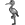

<!DOCTYPE html>
<html>
<head>

  <meta charset="utf-8" />
  <meta name="viewport" content="width=device-width, initial-scale=1.0">
  <meta name="description" content="">
  <meta name="author" content="">
  <link rel="shortcut icon" sizes="25x25" href="data/stork.png">

  <title>Лелеки 2014</title>
  
  <link rel="stylesheet" href="js/leaflet-0.7.3/leaflet.css" /> 
  <link rel="stylesheet" href="js/bootstrap-3.2.0/css/bootstrap.css" /> 
  <link rel="stylesheet" href="js/font-awesome-4.1.0/css/font-awesome.css" />
  <link rel="stylesheet" href="js/leaflet.markercluster/MarkerCluster.Default.css" />
  <link rel="stylesheet" href="js/leaflet.geosearch/l.geosearch.css" /> 
 
  <style>
    body {
      padding: 0;
      margin: 0;
    }
    html, body, #map {
      height: 100%;
      width: 100%;
    }
	
  </style> 
  
  <script type="text/javascript" src="js/jquery-2.1.1.min.js"></script>
  <script type="text/javascript" src="js/leaflet-0.7.3/leaflet.js"></script>
  <script type="text/javascript" src="js/bootstrap-3.2.0/js/bootstrap.js"></script> 
  <script type="text/javascript" src="js/leaflet.markercluster/leaflet.markercluster.js"></script>
  <script type="text/javascript" src="js/leaflet.edit-osm/leaflet.edit-osm.js"></script>
  <script type="text/javascript" src="js/leaflet-hash/leaflet-hash.js"></script> 
  <script type="text/javascript" src="js/leaflet.easybutton/easy-button.js"></script>
  <script type="text/javascript" src="js/leaflet.panoramio/panoramio.js"></script>
  <script type="text/javascript" src="js/leaflet.flickr/flickr.js"></script>
  <script type="text/javascript" src="js/leaflet.geosearch/l.control.geosearch.js"></script>  
  <script type="text/javascript" src="js/leaflet.geosearch/l.geosearch.provider.openstreetmap.js"></script>
  
</head>

<body>

  <div id="map"></div>
  
  <script>

    var storkmap = {};

/*    function formatBBox() {
        var map = storkmap.map,
            mapLatLngBounds = map.getBounds(),
            bbString = "(" + mapLatLngBounds.getSouth() + "," + mapLatLngBounds.getWest() + "," + mapLatLngBounds.getNorth() + "," + mapLatLngBounds.getEast() + ")";
        return bbString;
    }
*/ 
 
    function formatMarkerInfo(node) {

			var link = '<a href="http://www.openstreetmap.org/edit?editor=id&node=' + node.id + '">Edit this entry in iD</a><br>';
			//var user = '<b>Added by: </b>' + '<a href="http://www.openstreetmap.org/user/' + node.user + '">' + node.user + '</a><br>';
			var timestamp = '<b>Timestamp: </b>' + node.timestamp;
	
			var r = $('<table>');
			
			for (var i in node.tags)
			r.append($('<tr>').append($('<th>').text(i)).append($('<td>').text(node.tags[i])));
			
			var tags = $('<div>').append(r).html();

			
			var img = '<b>Foto: </b>' + '<a href="' + node.tags.image + '">' + "foto link" + '</a><br>';
			if (node.tags.image == null) img = '';
		
			
			return link + '<br>' + /*user + timestamp + '<br>' + '<br>' +*/ '<b>Tags:</b>' + '<br>' + tags + '<br>' + img;
    };
    
    function makeMarkers() {
        var markerCG = storkmap.markerClusterGroup;
        markerCG.clearLayers();
        storkmap.osmJson.forEach(function (node) {
            var marker;
            if (node.tags.hasOwnProperty(storkmap.currentTag)) {
				var storkIcon = new L.icon({
					iconUrl: "data/stork.png",
					iconSize: [25, 25],
					iconAnchor: [12, 12],
					popupAnchor: new L.Point(0, -12)
				  });			
                marker = L.marker(new L.LatLng(node.lat, node.lon), {icon: storkIcon});
                marker.bindPopup(formatMarkerInfo(node));
                markerCG.addLayer(marker);
            }
        });
    };
    
    function queryOverpass() {
            //var bbString = formatBBox(),
            //overpassQuery = encodeURIComponent("node" + '[birds_nest=stork]' + bbString + ";out body;"),
			overpassQuery = encodeURIComponent('area["boundary"="administrative"]["name:uk"="Україна"]->.a;node(area.a)' + '[birds_nest=stork]' + ";out body;"),
            overpassURL = "http://overpass-api.de/api/interpreter?data=[out:json];" + overpassQuery;

        $.ajax({
            url : overpassURL,
            type : 'GET',
            crossDomain : true,
            success : function (data) {
                storkmap.osmJson = data.elements;
                makeMarkers();
            }
        });
    };
 
    function onMapViewReset(e) {
        queryOverpass();
    };
    
    function onMapMoveEnd(e) {
        queryOverpass();
    };

    function makeMap() {

        var map = storkmap.map;
        //map.on('viewreset', onMapViewReset);
        //map.on('moveend', onMapMoveEnd);
		
        storkmap.map.addLayer(storkmap.markerClusterGroup);
		
        queryOverpass();

		var hash = new L.Hash(map);	
		L.control.scale().addTo(map);
/*					
		var baseLayer = {
		  "MapBox Tiles": layerMapBox,
		  "OpenStreetMap": layerOSM
		};
*/		
		var overlayLayer = {
			"&nbsp;Лелеки": storkmap.markerClusterGroup,
			"&nbsp;Фото Panoramio": panoramio,
			"&nbsp;Фото Flickr": flickr
			
		};
		
		var layerControl = L.control.layers( null, overlayLayer, {
		  collapsed: false
		}).addTo(map);

		new leafletEditOsm().addTo(map);		
		
		L.easyButton('fa-signal', 
					  function (){ window.open('statistics.html'); },
					 'Статистика'
					).addTo(map);
					
		L.easyButton('fa-info-circle', 
					  function (){ window.open('http://wiki.openstreetmap.org/wiki/Uk:Лелеки_2014'); },
					 'Конкурс з обліку гнізд білого лелеки в Україні'
					).addTo(map);					
					
        new L.Control.GeoSearch({
            provider: new L.GeoSearch.Provider.OpenStreetMap()
        }).addTo(map);
		
		map.setView([48.611, 31.685], 7);
		
    };

		var attr_osm = '&copy; <a href="http://www.openstreetmap.org/copyright">OpenStreetMap</a> contributors';
		var attr_mapbox = 'Map style &copy; <a href="https://www.mapbox.com/about/maps/">MapBox</a>; Map data &copy; <a href="http://www.openstreetmap.org/copyright">OpenStreetMap</a> contributors';
		var attr_nests = 'stork nests via <a href="http://www.overpass-api.de/">Overpass API</a>';
		var attr_dev = 'web map created by <a href="http://www.openstreetmap.org/user/HasT">HasT</a>';	

/*		
		var layerMapBox = L.tileLayer('http://{s}.tiles.mapbox.com/v3/{id}/{z}/{x}/{y}.png', {
			attribution: [attr_mapbox, attr_nests, attr_dev].join(', '),
			id: 'examples.map-20v6611k'
		});	
*/
		
		var layerOSM = L.tileLayer('http://{s}.tile.osm.org/{z}/{x}/{y}.png', {
			attribution: [attr_osm, attr_nests, attr_dev].join(', ')
		});

		var panoramio = new L.Panoramio({maxLoad: 50, maxTotal: 250});
		
		var api_key = '4dfd0637f46b382e8e391e005803ca9f';
		var flickr = new L.Flickr(api_key,{maxLoad: 50, maxTotal: 250}); 		
		

		storkmap.map = L.map('map', {layers: [layerOSM], minZoom: 6});
		storkmap.currentTag = "birds_nest";
		storkmap.markerClusterGroup = L.markerClusterGroup();
		storkmap.osmJson = {};
		makeMap();	

		
  </script>
</body>
</html>

